NanoBrasil News Agency
News
Projects, partnerships, events and news from NanoBrasil.
29 articles

NanoBrasil selected by Petrobras for a strategic meeting on nanomaterials

With a nanoparticle factory on the horizon, NanoBrasil and an international partner plan for 2027

Longer life, less maintenance: NanoBrasil brings nanotechnology to the challenge of Brazil's highways
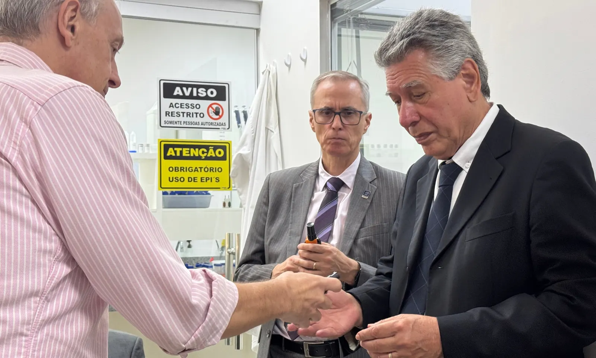
Finep president praises NanoBrasil during company visit: 'It is making a difference across the whole Brazilian landscape'
NanoBrasil expands its presence in Santa Catarina and advances a challenge with the textile industry
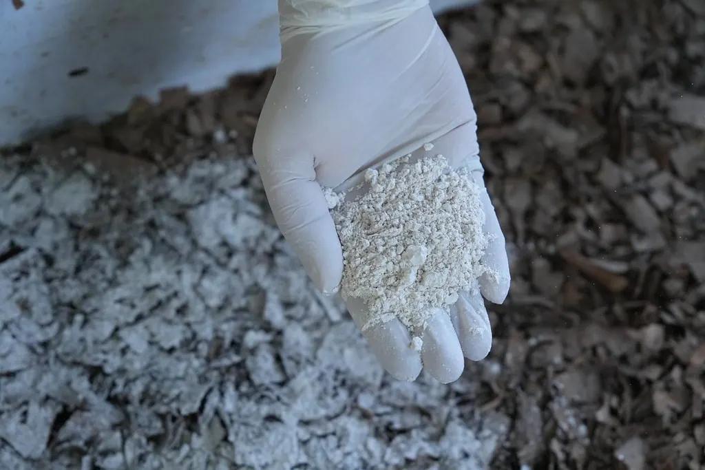
From the poultry house floor to the market: NanoBrasil brings together a new nanotechnology drying agent
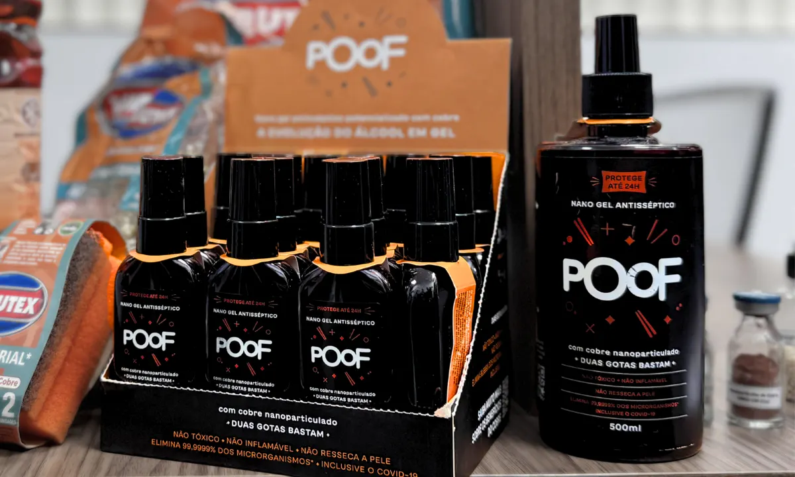
END TO END: From UFMG to Drogarias Araújo, POOF's path to the market
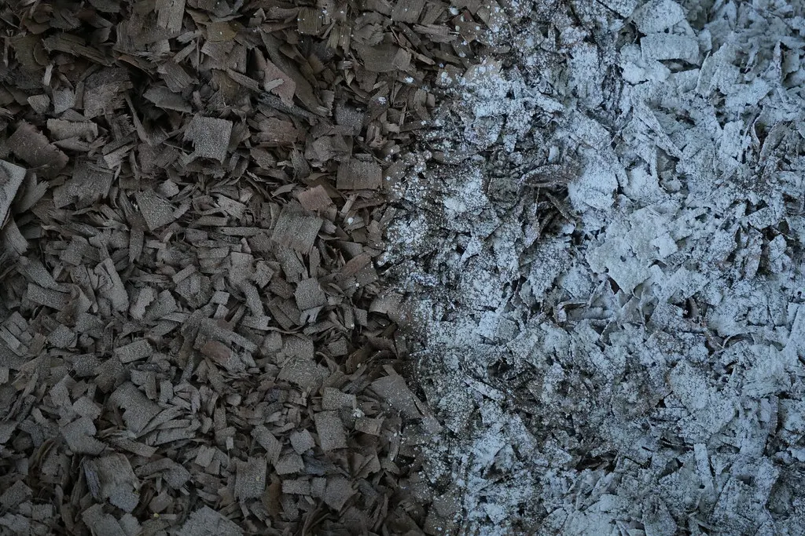
Beyond moisture: nanotechnology expands the action of drying agents in poultry litter

NanoBrasil creates a technology X-ray to reveal market opportunities

Mold counts: nanotechnology expands protection for hotels, hospitals and industries
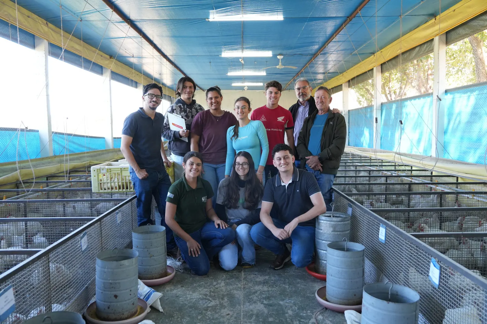
NanoBrasil and UFLA join forces to accelerate innovation in Brazilian poultry farming

When small lesions cost billions: the invisible impact of poultry litter

A first-of-its-kind technology aims to transform one of the biggest challenges in Brazilian poultry farming

Partnership with UFMG strengthens NanoBrasil's strategy of connecting science and industry
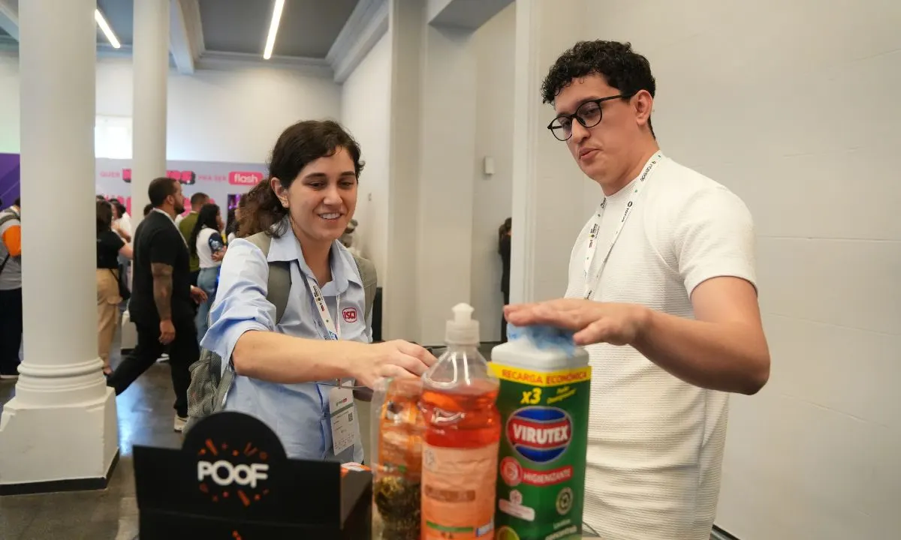
NanoBrasil turns science into business opportunities at Minas Summit

Buildings could help capture CO₂ from the atmosphere with the help of nanotechnology

Nanotechnology applied to industry: NanoBrasil develops a solution for a Brazilian paint giant

Kitchen sponges: the silent contamination cycle inside your home
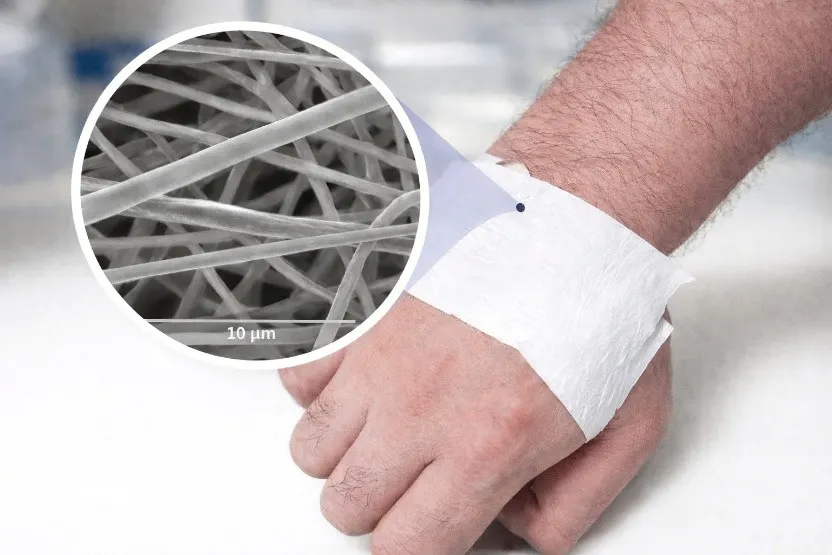
Nanotechnology creates dressings capable of treating wounds intelligently

In agribusiness and in business: NanoBrasil's presence at events marks the momentum of a new phase
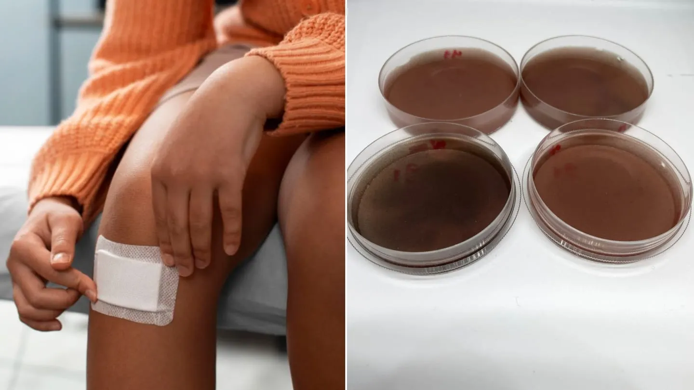
Nanocopper: NanoBrasil develops a 'smart dressing' that heals and moisturizes the skin
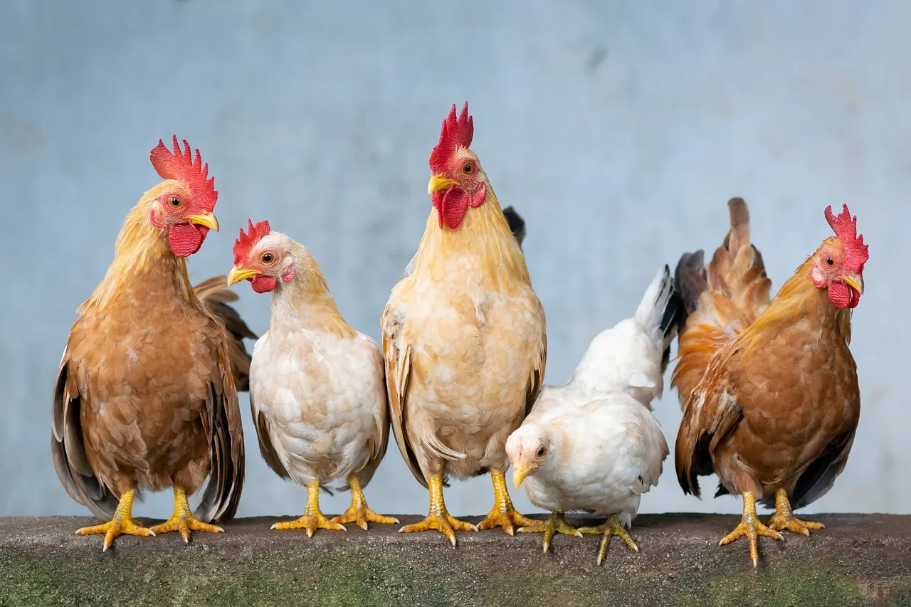
From the lab to the farm: how NanoBrasil solves poultry litter problems
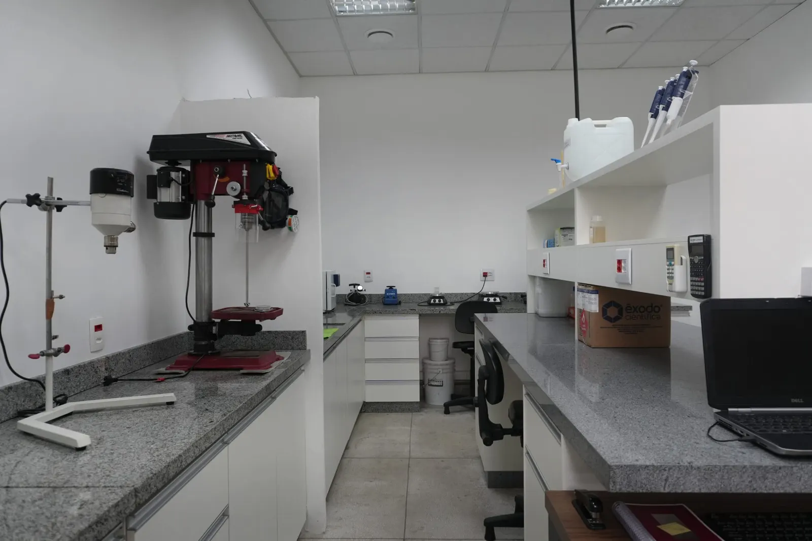
Expansion: NanoBrasil opens a new laboratory with cutting-edge equipment

Encouraging new researchers: NanoBrasil brings high school students closer to nanotechnology
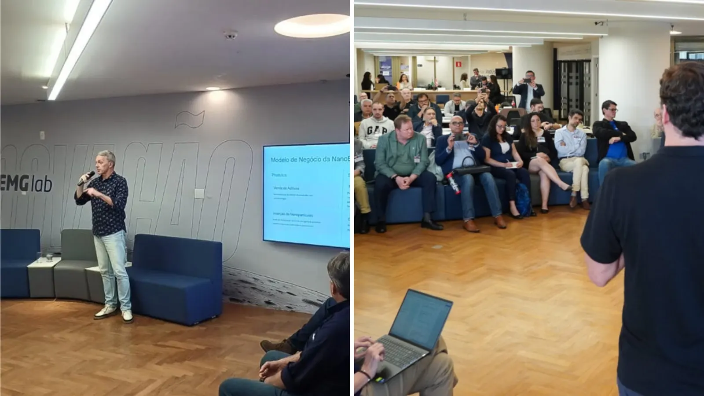
Connecting with industry: NanoBrasil presents nanotechnology to industry at a FIEMG Lab event

Nanotechnology in the spotlight: NanoBrasil hosts a producer from Jornal Nacional

A solution for the world's strongest sea air: nanotechnology is a key to preventing corrosion

Applied Nanotechnology presentation

A nanotechnology reference, NanoBrasil hosts a national innovation delegation
No news found.
Let's talk
Nanotechnology may be the solution to boost your business.
Tell us about your industry's challenge. We design the research and supply the nanoparticles to take the solution to scale.